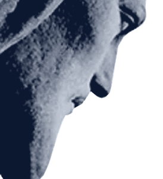

Todos os jogos do Campeonato Estadual da FBERJ, de todas as categorias, num lugar só. Escolha a categoria e o seu time para ver data, hora e ginásio de cada jogo. Quando o Klaus TV estiver no jogo, aparece o botão 📊 Ao vivo.